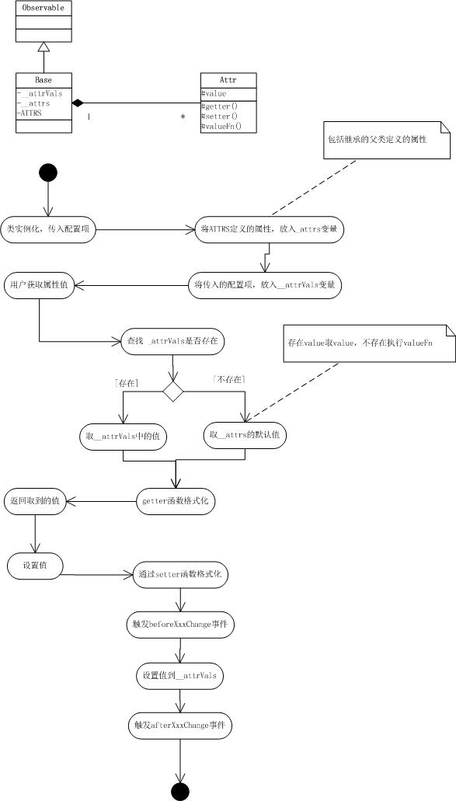

欢迎使用BUI！在这一章节里，我们将学习以下内容:
配置项类实例化时的初始配置，决定对象的初始值，我们看一下示例：
我们在这里约定，BUI中的所有控件的配置项全部按照键值对的形式传入，也就是说所有的类实例化时只需要传入一个参数。
属性一般是指对象的某个性质，对于javascript对象而言可以是对象、方法、直接量。由于javascript对象对于成员不存在访问控制，所以对成员的访问和设置没法进行控制，属性发生改变时也无法做出对应的相应。如下示例：
所以我们需要这样一种属性：
所以我们使用了BUI.Base类，它拥有以下功能：
beforeXxxChange 和 afterXxxChange 事件，其中属性名是xxx属性的细节和使用接下来我们会详细的讲解，所有需要使用属性的类，继承BUI.Base类即可
BUI.Base使用BUI.extend方法value是默认值，属性的定义下面有更详细的介绍上面的示例说明了如何定义一个属性，和如何设置默认值value，接下来我们来看属性还支持哪些功能
上面的示例说明了属性的具体用法，以及内部的成员的含义：
下图说明了属性的执行过程

Base类有2个私有字段和一个静态字段：
Xxx代表属性名，首写字母大写，如： name => beforeNameChange,afterNameChange
BUI.Base继承自BUI.Obeservable，继承来的属性和方法，请查看BUI的方法和事件
下面只是简单的列表，未显示从父类继承来的方法，详细信息请查看API文档
BUI的配置和属性是所有控件的一个基础章节，接下来继续学习BUI的方法和事件，你可以去看一下如何组织模块CMD组织模块，然后进入到BUI控件编写的学习中。